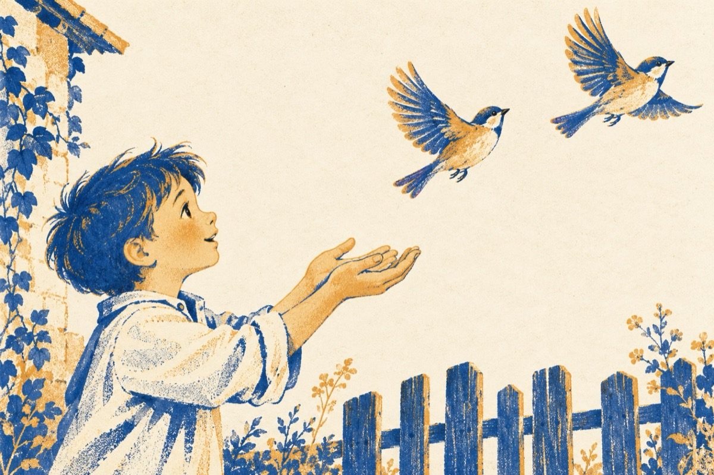

Gelozie
Mai acum o săptămână
Gigel jucându-se în curte
S-a trezit cu o vrabie în mână
Dintr-un stol de vrăbii multe.
Și-a pus palmele căuș
Șo cu grijă vrăbiuța a luat
Bucuros și la rându-i jucăuș
I-a dat un dulce pupat.
Vrăbioiul sus pe garduri a-nceput a ciripi
Cuprins fiind de gelozie
Pentru a-și salva iubita la Gigel s-a reprezit
Iar acestuia i-a venit o năstrușnică idee
Vrăbiuței sa-i dea drumul ca să plece
Și în schimb să prindă vrăbioiul
Care-și căuta pereche
Însă el cu vrabia și-a luat zboru
Iar Gigel a ramas prostit într-o ureche!...
Vasile Groza
Apare și în: Poezii cu animale.